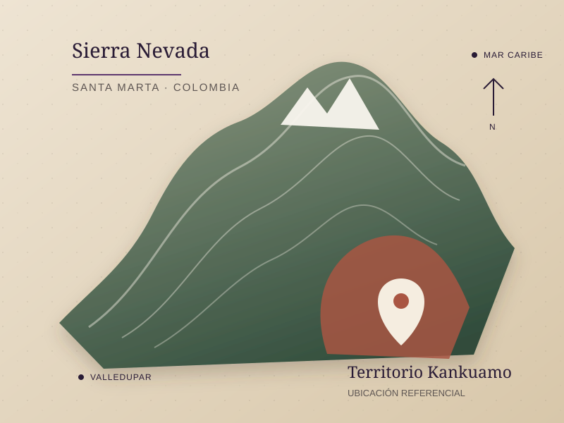
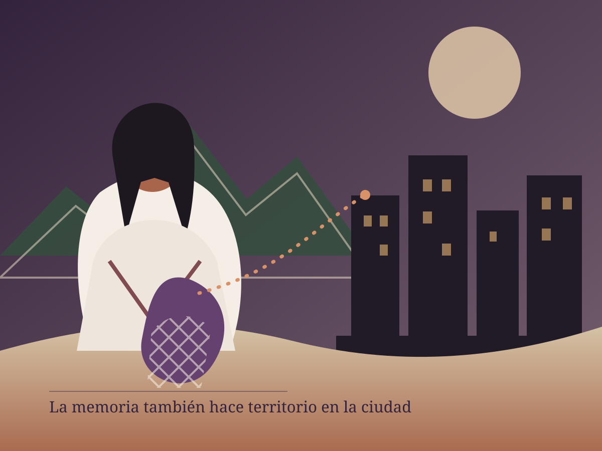
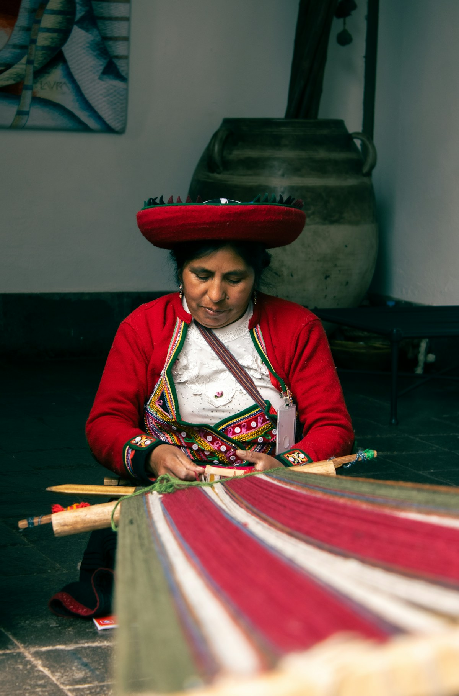

Revista digital · Memoria histórica y territorio
Mujeres Kankuamas
Territorio, Memoria y Resistencia
“Aunque nos alejaron del territorio, el territorio sigue habitando en nuestra memoria.”
Frase editorial de síntesis · basada en patrones documentados de desplazamiento indígena R7R10
Explorar la historiaImagen editorial generada para el proyecto · representación no documental R19
01 / Pueblo
Raíces vivas
¿Quién es el pueblo Kankuamo?
El pueblo Kankuamo habita ancestralmente la vertiente suroriental de la Sierra Nevada de Santa Marta. Allí, el territorio no se reduce a una extensión geográfica: es memoria, norma de vida y vínculo espiritual. R1R3
Junto con los pueblos Arhuaco, Kogui y Wiwa, comparte la responsabilidad de cuidar la Sierra, entendida como corazón del mundo. Su vida colectiva se articula mediante el gobierno propio, las autoridades tradicionales, las familias y las prácticas comunitarias que sostienen la identidad y la permanencia. R1

Una historia que no es lineal
Selecciona un momento para recorrer procesos de permanencia, violencia y reconstrucción.
Ancestral
La vida se ordena desde el territorio, los lugares sagrados, la palabra de mayores y mayoras y el cuidado comunitario.
02 / Territorio
El corazón de la vida
El territorio no es un escenario.
Es un ser vivo.
En la cosmovisión de los pueblos de la Sierra, cada río, piedra, cerro y camino participa de un equilibrio mayor. La Línea Negra enlaza sitios sagrados y expresa una frontera espiritual, cultural y ecológica que trasciende los límites administrativos. R5R9
Propiedad colectiva
El territorio se protege como patrimonio común, no como una suma de parcelas individuales.
Autonomía
El gobierno propio permite decidir sobre la vida comunitaria conforme a normas y autoridades propias.
Consulta previa
Las decisiones que afectan al pueblo deben contar con participación libre, informada y culturalmente adecuada.
Protección cultural
Defender lengua, tejidos, ritualidad, alimentos y memoria también es defender el territorio.
03 / Poder
Mapa de actores
¿Quién decide sobre el territorio?
Esta visualización editorial organiza influencias, tensiones, alianzas y responsabilidades. No representa una medición estadística ni una jerarquía definitiva.
Selecciona un actorExplora la red de poder
Cada nodo muestra su influencia y relación con el territorio.
04 / Mujeres
Guardianas de la memoria
Constructoras
de paz
Las mujeres Kankuamas sostienen y renuevan la vida colectiva: narran, cultivan, tejen, cuidan, organizan y convierten la memoria del daño en acción comunitaria y construcción de paz.
Liderazgo femenino +
Crean redes, promueven decisiones comunitarias y abren caminos para otras generaciones.
Transmisión de saberes +
La cocina, el tejido, la oralidad y el cuidado son archivos vivos de identidad.
Defensa territorial +
Denuncian afectaciones, protegen lugares de vida y movilizan respuestas colectivas.
Feminismo comunitario +
Piensan la autonomía de las mujeres ligada al cuerpo, la comunidad y el territorio.
05 / Desplazamiento
Cuando el territorio se rompe
Irse para sobrevivir.
Recordar para volver.
Conflicto armadoAmenazasDespojoPobrezaMigración
Sierra NevadaOrigen · comunidad · arraigo
más de 800 km simbólicos
BogotáLlegada · adaptación · resistencia
Se fragmentan las redes
La distancia altera vínculos de cuidado, autoridades y formas de ayuda mutua.
La memoria cambia de lugar
Saberes y prácticas deben reinventarse en barrios y contextos urbanos.
La autonomía se reduce
La informalidad, el desempleo y la discriminación profundizan desigualdades.
El duelo queda abierto
Desarraigo, miedo y nostalgia conviven con la capacidad de recomenzar.
06 / Ciudad
Territorio en movimiento
Las Mujeres Kankuamas
en Contexto Urbano
La llegada a ciudades como Bogotá no suspende la pertenencia colectiva. Sin embargo, transforma las condiciones para cuidar la identidad, ejercer derechos, sostener redes comunitarias y transmitir los saberes vinculados a la Sierra.

Identidad cultural en riesgo
La dispersión familiar y comunitaria reduce los espacios cotidianos donde se aprende la historia propia y se fortalece la pertenencia.
Cultura · PervivenciaDesarraigo territorial
La distancia de los lugares sagrados, las autoridades y los ciclos de la Sierra altera prácticas espirituales, productivas y organizativas.
Territorio · VínculoDiscriminación y violencias
El racismo, los estereotipos y las violencias basadas en género pueden intensificarse en entornos laborales, educativos e institucionales.
Género · No discriminaciónDificultades económicas
La informalidad, el costo de la vivienda y la falta de redes de apoyo limitan la autonomía económica y aumentan las cargas de cuidado.
Economía · CuidadoBarreras de acceso a derechos
Los trámites, la desarticulación institucional y la ausencia de atención intercultural dificultan el acceso efectivo a salud, educación y reparación.
Derechos · InstitucionesMemoria invisibilizada
Las narraciones urbanas suelen desconocer que muchas mujeres indígenas llegaron a la ciudad por hechos asociados al conflicto armado.
Memoria · ReconocimientoPérdida de saberes ancestrales
Sin espacios intergeneracionales, pueden debilitarse conocimientos sobre tejido, alimentación, medicina propia, oralidad y cuidado territorial.
Saberes · TransmisiónParticipación y liderazgo
Las mujeres crean redes, colectivas y procesos pedagógicos que convierten la ciudad en un nuevo escenario de incidencia y resistencia.
Organización · FuturoCuadro conceptual interactivo
Del territorio al liderazgo
Activa cada concepto para observar cómo una experiencia territorial se transforma, atraviesa el desplazamiento y produce nuevas formas de resistencia.
01 · Punto de partida
Territorio
Origen material, espiritual y político de la vida colectiva. La relación con la Sierra organiza responsabilidades, afectos y formas de gobierno.

Memoria cultural
Preservar no significa congelar.
En contexto urbano, los saberes pueden encontrar otros espacios: encuentros comunitarios, procesos educativos, redes de artesanas, archivos digitales y actividades con niñas, niños y jóvenes.
La continuidad cultural depende de condiciones materiales, reconocimiento público y participación efectiva de las propias mujeres en las decisiones que las afectan.
Consultar fuentes y créditos07 / Relatos
Historias de resistencia
Tres voces.
Una memoria colectiva.
Relatos compuestos con fines pedagógicos, inspirados en patrones y experiencias documentadas de mujeres indígenas afectadas por el conflicto y el desplazamiento. No corresponden a una persona identificable.
01
Bogotá · Memoria en tránsito
La lideresa desplazada
“Llegué con una bolsa de ropa. Lo demás lo traje por dentro.”
En la ciudad aprendió otros mapas: rutas de buses, oficinas, filas. Convirtió esa experiencia en orientación para familias recién llegadas y en una voz para exigir atención con enfoque indígena.
Relato inspirado en experiencias documentadas. Voz compuesta, sin identidad real ni testimonio literal. Retrato editorial no documental. R7R8R10R19
08 / Estado
Derechos y realidad
¿Qué ha hecho el Estado?
- 01Reconocimiento constitucional
Protección de la diversidad étnica y cultural y reconocimiento de derechos colectivos.
- 02Consulta previa
Marco para participar en decisiones susceptibles de afectar directamente a los pueblos.
- 03Atención a víctimas
Instrumentos de registro, asistencia, reparación y restitución.
- 04Programas de reparación
Medidas individuales y colectivas con potencial de reconstrucción comunitaria.
- 01Derecho escrito, garantía pendiente
Persisten demoras, fragmentación institucional y respuestas insuficientes.
- 02Participación limitada
Las mujeres enfrentan cargas de cuidado y barreras para incidir en decisiones.
- 03Barreras económicas
La falta de ingresos y acceso a tierra reduce autonomía y capacidad organizativa.
- 04Enfoque diferencial débil
Ser mujer, indígena y desplazada exige respuestas integrales aún incompletas.
09 / Futuro
Propuestas para el cambio
Una hoja de ruta
para permanecer
Fortalecer el liderazgo femenino
Escuelas de formación, redes de cuidado y garantías para ejercer liderazgos sin violencia.
Promover participación política
Voz efectiva de las mujeres en gobiernos propios e instituciones públicas.
Impulsar autonomías económicas
Emprendimientos colectivos, comercialización justa y acceso a financiación.
Fortalecer educación intercultural
Aprendizajes conectados con territorio, historia propia y nuevas tecnologías.
Recuperar saberes ancestrales
Espacios intergeneracionales para oralidad, tejido, medicina y alimentación.
Garantizar reparación integral
Medidas oportunas, territoriales y construidas con enfoque de género.
10 / Archivo vivo
Galería multimedia
Mirar también
es recordar
“Tejer es ordenar el pensamiento.”Memoria oral
11 / Documentación
Rigor y transparencia
Fuentes, Referencias
y Créditos
Sistema documental que permite rastrear las bases comunitarias, académicas, jurídicas y visuales de la pieza. Las problemáticas urbanas y las relaciones de poder se presentan como lecturas cualitativas, no como mediciones estadísticas exhaustivas.
Bibliografía académica 3 referencias
Pumarejo, M. A. y Morales Thomas, P. (2003)
La recuperación de la memoria histórica de los Kankuamo: un llamado de los antiguos. Siglos XX–XVIII. Universidad Nacional de Colombia, Facultad de Ciencias Humanas. Referencia sobre historia, identidad y reconstrucción colectiva.
Repositorio UNALMurcia Quevedo, M. y otros. (2016)
Memoria de oficio: etnia Kankuama. Artesanías de Colombia. Documento sobre prácticas textiles, oficio y transmisión cultural.
Repositorio institucionalMoore Torres, C. (2018)
“Feminismos del Sur, abriendo horizontes de descolonización. Los feminismos indígenas y los feminismos comunitarios”. Estudios Políticos, 53, 237–259.
Consultar DOIInstituciones oficiales y comunitarias 6 referencias
Cabildo Indígena del Resguardo Kankuamo
Información comunitaria e institucional sobre territorio, gobierno propio, autoridades, comisiones y procesos colectivos.
Sitio oficialDepartamento Administrativo Nacional de Estadística (DANE)
Autorreconocimiento étnico y resultados del Censo Nacional de Población y Vivienda 2018, incluidos recursos específicos sobre los pueblos Arhuaco, Kankuamo y Wiwa. Toda cifra debe leerse con su año y alcance estadístico.
Portal de enfoque étnicoCentro Nacional de Memoria Histórica (CNMH)
Publicaciones y archivos sobre conflicto armado, memorias indígenas, daños territoriales y procesos de resistencia.
Portal institucionalUnidad para las Víctimas
Marco institucional de atención, asistencia y reparación con enfoque étnico para víctimas del conflicto armado.
Enfoque étnicoMinisterio del Interior de Colombia
Información institucional sobre asuntos indígenas, consulta previa y coordinación de políticas para pueblos originarios.
Portal institucionalOrganización Nacional Indígena de Colombia (ONIC)
Información organizativa, comunicativa y de incidencia sobre derechos, pervivencia y agendas de los pueblos indígenas de Colombia.
Portal de la ONICInformes sobre pueblos y mujeres indígenas 4 referencias
ONU Mujeres (2018)
Gender equality and indigenous peoples. Documento de referencia sobre derechos, participación y desigualdades que afectan a mujeres indígenas.
PublicaciónOrganización Panamericana de la Salud
Diversidad cultural, salud intercultural, participación y barreras diferenciales que afectan especialmente a mujeres indígenas.
Consultar fuenteCEPAL (2013)
Mujeres indígenas en América Latina: dinámicas demográficas y sociales en el marco de los derechos humanos.
Repositorio CEPALACNUR
Material institucional sobre pueblos indígenas, desplazamiento forzado, protección internacional y soluciones duraderas.
Portal temáticoNormativa y derechos territoriales 7 referencias
Presidencia de Colombia. Decreto 1500 de 2018
Redefinición del territorio ancestral de los pueblos Arhuaco, Kogui, Wiwa y Kankuamo, expresado en el sistema de espacios sagrados de la Línea Negra.
Texto normativoPresidencia de Colombia. Decreto Ley 4633 de 2011
Medidas de asistencia, atención, reparación integral y restitución de derechos territoriales para pueblos y comunidades indígenas.
Texto normativoCorte Constitucional. Auto 004 de 2009
Protección de derechos fundamentales de pueblos indígenas desplazados o en riesgo de desplazamiento por el conflicto armado.
RelatoríaCorte Constitucional. Auto 092 de 2008
Protección de los derechos fundamentales de las mujeres víctimas del desplazamiento forzado y reconocimiento de riesgos de género.
RelatoríaCongreso de Colombia. Ley 21 de 1991
Aprobación del Convenio 169 de la OIT sobre pueblos indígenas y tribales: participación, consulta y protección de vínculos territoriales.
Texto normativoConstitución Política de Colombia (1991)
Reconocimiento de la diversidad étnica y cultural, la autonomía territorial y los derechos colectivos de los pueblos indígenas.
Texto constitucionalNaciones Unidas (2007)
Declaración de las Naciones Unidas sobre los Derechos de los Pueblos Indígenas.
Documento en PDFRecursos visuales y créditos 3 registros
Fotografía de tejido tradicional
Anyela Málaga Lazarte, Cusco, Perú, 2025. Unsplash, Licencia Unsplash. Referencia regional; no representa al pueblo Kankuamo.
Ficha y licenciaPortada y retratos editoriales
Imágenes generadas mediante OpenAI para este proyecto. Son representaciones no documentales, no identifican personas reales y no deben interpretarse como registro etnográfico.
Mapa e ilustraciones vectoriales
Elaboración propia para el proyecto. El mapa de la Sierra es ilustrativo y referencial; la escena urbana es una representación simbólica.
Fuentes y enlaces revisados el 11 de junio de 2026. Las referencias identificadas como R1–R23 se conectan con las notas documentales de cada sección. Los enlaces externos abren en una pestaña nueva.
La historia continúa
“La defensa del territorio no termina cuando una mujer abandona físicamente la Sierra Nevada; continúa en cada acción que preserva la memoria, la cultura y la identidad colectiva.”
Conclusión editorial de síntesis · fondo visual no documental R1R10R19R21
Volver al origen ↑